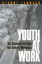

Browse
other Author lists:
A B C
D E F
G H I
J K L
M N O
P Q R
S T U
V W X
Y Z |
 |
The Magic of Children's Gardens
Inspiring Through Creative Design
Tai,
Lolly, with a foreword by Jane L. Taylor
376 pp • 8x10 • Spring 2017
cloth 978-1-4399-1447-2
|
 |
Nisei/Sansei
Shifting Japanese American Identities and Politics
Takahashi,
Jere
280 pp • 6x9 • Fall 1997
paper 978-1-56639-659-2
cloth 978-1-56639-550-2
|

|
Global Philadelphia
Immigrant Communities Old and New
Edited by Takenaka, Ayumi and Mary Johnson Osirim
320 pp • 6x9 • Spring 2010
paper 978-1-43990-012-3
cloth 978-1-43990-013-0
|
 |
Philadelphia's
Cultural Landscape
The Sartain Family Legacy
edited
by Martinez, Katharine and Page Talbott
211 pp • 8.5x11 • Fall 2000
cloth 978-1-56639-791-9
|
 |
Chinese Connections
Critical Perspectives on Film, Identity, and Diaspora
edited by Tan,See-Kam, Peter X. Feng and Gina Marchetti 320 pp • 6x9 • Fall 2008
paper 978-1-59213-268-3
cloth 978-1-59213-267-6
|
 |
Engineering
Disability
Public Policy and Compensatory Technology
Tanenbaum,
Sandra J.
184 pp • Spring 1986
cloth 978-0-87722-403-7 |
 |
Unsettled
Cambodian Refugees in the New York City Hyperghetto
Tang, Eric
234 pp • 5.5x8.25 • Fall 2015
paper 978-1-4399-1119-8
cloth 978-1-4399-1118-1 |

|
Masters
of the Sabar
Wolof Griot Percussionists of Senegal
Tang, Patricia
Includes CD
224 pp • 6x9 • Fall 2006
paper 978-1-59213-420-5
cloth 978-1-59213-419-9
|

|
The Philly Fan's Code
The 50 Toughest, Craziest, Most Legendary Philadelphia Athletes of the Last 50 Years
Tanier, Mike
264 pp • 5.5x8.25 • Fall 2011
paper 978-1-4399-0599-9
|
|  |
Youth
at Work
The Unionized Fast-Food and Grocery Workplace
Tannock,
Stuart
264 pp • 6x9 • Spring 2001
paper 978-1-56639-854-1
cloth 978-1-56639-853-4
|
 |
Technology
and the Rise of the Networked City in Europe and America
edited
by Tarr, Joel A. and Gabriel Dupuy
360 pp • Fall 1988
cloth 978-0-87722-540-9 |
|
Espejos y ventanas (Mirrors and Windows)
historias orales de trabajadores agricolos y sus familias (Oral Histories of Mexican Farmworkers and the Families)
edited by Lyons, Mark, and August Tarrier
318 pp • 6x9 • Spring 2012
paper 978-0-97129-966-5 |
 |
The Forgotten Bottom Remembered
Stories from a Philadelphia Neighborhood
edited by Tarrier, August
202 pp • 6x9 • Spring 2012
paper 978-0-97129-964-1 |
 |
Transgender
Care
Recommended Guidelines, Practical Information, and Personal Accounts
Israel,
Gianna E. and Donald E. Tarver, foreword by Diane Shaffer, M.D.
304 pp • 6x9 • Fall 1997
paper 978-1-56639-852-7
cloth 978-1-56639-571-7
|
 |
Farms,
Mines, and Main Streets
Uneven Development in a Dakota County
Tauxe,
Caroline S.
288 pp • 6x9 • Fall 1993
cloth 978-1-56639-070-5 |
 |
Return
of Guatemala's Refugees
Reweaving the Torn
Taylor,
Clark
248 pp • 5.5x8.2 • Spring 1998
paper 978-1-56639-622-6
cloth 978-1-56639-621-9
|

|
Youth Violence
Sex and Race Differences in Offending, Victimization, and Gang Membership
Esbensen, Finn-Aage, Dana Peterson, Terrance J. Taylor and Adrienne Freng
244 pp • 6x9 • Fall 2010
paper 978-1-4399-0072-7
cloth 978-1-4399-0071-0
|

|
Why Veterans Run
Military Service in American Presidential Elections, 1789–2016
Teigen, Jeremy M.
320 pp • 6x9 • Fall 2017
paper 978-1-4399-1436-6
cloth 978-1-4399-1435-9
|
|
Schooling
for "Good Rebels"
Socialist Education for Children in the United States, 1900–1920
Teitelbaum,
Kenneth
304 pp • 6x9 • Fall 1992
cloth 978-0-87722-980-3 |
 |
My
Life as a Colombian Revolutionary
Reflections of a Former Guerrillera
V�squez
Perdomo, Mar�a Eugenia, translated by Lorena Terando, introduction
by Arthur Schmidt
312 pp • 6x9 • Fall 2004
paper 978-1-59213-101-3
cloth 978-1-59213-100-6
|
 |
Abuse of Power
How Cold War Surveillance and Secrecy Policy Shaped the Response to 9/11
Theoharis, Athan
232 pp • 6x9 • Spring 2011
paper 978-1-4399-0665-1
cloth 978-1-4399-0664-4
|
 |
The
Boss
J. Edgar Hoover and the Great American Inquisition
Theoharis,
Athan G. and John Stuart Cox
504 pp • Spring 1988
cloth 978-0-87722-532-4 |
 |
Diet
and Domestic Life in Society
edited
by Sharman, Anne, Janet Theophano, Karen Curtis and Ellen Messer
288 pp • Fall 1990
cloth 978-0-87722-751-9 |
 |
Rites
of Assent
Two Novellas
Qasim,
Abd al-Hakim, translated by Peter Theroux, introduction by Samia
Mehrez
192 pp • 5.5x8.25 • Spring 1995
paper 978-1-56639-354-6
cloth 978-1-56639-353-9
|
 |
For
an Audience
Thom,
Paul
256 pp • 6x9 • Fall 1992
cloth 978-0-87722-991-9 |
 |
Asian American Women's Popular Literature
Feminizing Genres and Neoliberal Belonging
Thoma, Pamela
232 pp • 6x9 • Fall 2013
paper 978-1-4399-1019-1
cloth 978-1-4399-1018-4 |
 |
Technological
Visions
The Hopes and Fears that Shape New Technologies
edited
by Sturken, Marita, Douglas Thomas and Sandra Ball-Rokeach
384 pp • 6x9 • Fall 2003
paper 978-1-59213-227-0
cloth 978-1-59213-226-3
|
 |
Detroit
Race and Uneven Development
Darden,
Joe T., Richard Child Hill, June Thomas and Richard Thomas
336 pp • Fall 1987
paper 978-0-87722-776-2
cloth 978-0-87722-485-3
|
 |
Living
Morally
A Psychology of Moral Character
Thomas,
Laurence
278 pp • Spring 1989
paper 978-0-87722-778-6
cloth 978-0-87722-602-4 |
 |
Vessels
of Evil
American Slavery and the Holocaust
Thomas,
Laurence Mordekhai
232 pp • 5.5x8.25 • Fall 1993
paper 978-1-56639-100-9
cloth 978-1-56639-093-4 |

|
Multicultural Girlhood
Racism, Sexuality, and the Conflicted Spaces of American Education
Thomas, Mary E.
216 pp • 6x9 • Fall 2011
paper 978-1-4399-0732-0
cloth 978-1-4399-0731-3
|
 |
Houston
Growth and Decline in a Sunbelt Boomtown
Shelton,
Beth Anne, Joe R. Feagin, Robert Bullard, Nestor Rodriguez and
Robert D. Thomas
219 pp • Spring 1989
cloth 978-0-87722-607-9 |
 |
Merengue
Dominican Music and Dominican Identity
Austerlitz,
Paul, foreword by Robert Farris Thompson
224 pp • 6x9 • Fall 1996
paper 978-1-56639-484-0
cloth 978-1-56639-483-3
|
 |
Land
of the Giants
New York's Polo Grounds
Thornley,
Stew
192 pp • 7x10 • Fall 2000
cloth 978-1-56639-796-4
|
 |
Hung
Jury
The Diary of a Menendez Juror
20 Years Later
Thornton,
Hazel
206 pp • 5.5x8.25 • Spring 2017
paper 978-1-4399-1513-4
|
 |
Patriarchy
on the Line
Labor, Gender, and Ideology in the Mexican Maquila Industry
Tiano,
Susan
272 pp • 6x9 • Fall 1994
paper 978-1-56639-196-2
cloth 978-1-56639-195-5 |
 |
As French As Everyone Else?
A Survey of French Citizens of Maghrebin, African, and Turkish Origin
Sylvain Brouard and Vincent Tiberj
Foreword by Pascal Perrineau, Translated by Jennifer Fredette
152 pp • 5.5x8.25 • Spring 2011
paper 978-1-4399-0296-7
cloth 978-1-4399-0295-0
|
 |
The
Politics of Democratic Inclusion
edited
by Wolbrecht, Christina and Rodney E. Hero with Peri E. Arnold,
Alvin B. Tillery
352 pp • 6x9 • Spring 2005
paper 978-1-59213-359-8
cloth 978-1-59213-358-1
|
 |
Half
a Job
Bad and Good Part-Time Jobs in a Changing Labor Market
Tilly,
Chris
240 pp • 6x9 • Fall 1995
paper 978-1-56639-382-9
cloth 978-1-56639-381-2 |
 |
Sudden
Death and the Myth of CPR
Timmermans,
Stefan, foreword by Bern Shen
272 pp • 6x9 • Fall 1999
paper 978-1-56639-716-2
cloth 978-1-56639-715-5
|
 |
The
Gold Standard
The Challenge of Evidence-Based Medicine and Standardization in
Health Care
Timmermans,
Stefan and Marc Berg
280 pp • 6x9 • Spring 2003
paper 978-1-59213-188-4
cloth 978-1-59213-187-7
|
 |
Positively
No Filipinos Allowed
Building Communities and Discourse
edited
by Tiongson, Jr., Antonio T., Edgardo V. Gutierrez and Ricardo V.
Gutierrez, foreword by Lisa Lowe 272 pp •
6x9 • Fall 2005
paper 978-1-59213-122-8
cloth 978-1-59213-121-1
|

|
Sync
Stylistics of Hieroglyphic Time
Tobias, James
304 pp • 6x9 • Spring 2010
cloth 978-1-4399-0201-1
|
 |
National
Lawyers Guild
From Roosevelt through Reagan
edited
by Ginger, Ann Fagan and Eugene M. Tobin, foreword by Clark
Ramsey
344 pp • Fall 1987
cloth 978-0-87722-488-4 |
 |
Teaching Marianne and Uncle Sam
Public Education, State Centralization, and Teacher Unionism in France and the United States
Toloudis, Nicholas
230 pp • 6x9 • Fall 2012
cloth 978-1-43990-906-5
|

|
Managing the Infosphere
Governance, Technology, and Cultural Practice in Motion
McDowell, Stephen D., Philip E. Steinberg and Tami K. Tomasello
248 pp • 5.5x8.25 • Fall 2007
paper 978-1-59213-280-5
cloth 978-1-59213-279-9
|

|
Feminism and Affect at the Scene of Argument
Beyond the Trope of the Angry Feminist
Tomlinson, Barbara
288 pp • 6x9 • Spring 2010
paper 978-1-4399-0247-9
cloth 978-1-4399-0246-2
|
 |
Four Germanys
A Chronicle of the Schorcht Family
Pitkin, Donald S., foreword by John C. Torpey
316 pp • 6x9 • Fall 2016
paper 978-1-4399-1343-7
cloth 978-1-4399-1342-0 |
 |
Transformations of Warfare in the Contemporary World
edited by Torpey, John and David Jacobson
192 pp • 5.5x8.25 • Spring 2016
paper 978-1-4399-1313-0
cloth 978-1-4399-1312-3
|
 |
Between
Melting Pot and Mosaic
African American and Puerto Ricans in the New York Political Economy
Torres,
Andr�s
264 pp • 6x9 • Spring 1995
paper 978-1-56639-280-8
cloth 978-1-56639-279-2
|
 |
Tortilleras
Hispanic and U.S. Latina Lesbian Expression
edited
by Torres, Lourdes and Inmaculada Perpetusa-Seva
288 pp • 7x10 • Fall 2002
paper 978-1-59213-007-8
cloth 978-1-59213-006-1
|
|
By
Heart/De Memoria
Cuban Women's Journeys In and Out of Exile
edited
by Torres, Mar�a de los Angeles
208 pp • 5.5x8.25 • Fall 2002
paper 978-1-59213-011-5
cloth 978-1-59213-010-8
|
 |
The
Puerto Rican Movement
Voices from the Diaspora
edited
by Torres, Andr�s and Jos� E. Vel�zquez
432 pp • 6x9 • Spring 1998
paper 978-1-56639-618-9
cloth 978-1-56639-617-2
|
 |
Latinos in New England
edited
by Torres, Andrés 344 pp • 6x9
• Spring 2006
paper 978-1-59213-417-5
cloth 978-1-59213-416-8
|
 |
Borderless
Borders
U.S. Latinos, Latin Americans, and the Paradox of Interdependence
edited
by Bonilla, Frank, Edwin Mel�ndez, Rebecca Morales and Mar�a
de los Angeles Torres
336 pp • 6x9 • Spring 1998
paper 978-1-56639-620-2
cloth 978-1-56639-619-6
|
 |
Presenting
Women Philosophers
edited
by Tougas, Cecile T. and Sara Ebenreck
280 pp • 7x10 • Spring 2000
paper 978-1-56639-761-2
cloth 978-1-56639-760-5
|
|
The
Package Deal
Marriage, Work, and Fatherhood in Men's Lives
Townsend,
Nicholas W.
264 pp • 6x9 • Spring 2002
paper 978-1-56639-958-6
cloth 978-1-56639-957-9
|
 |
In
The Place To Be
Guy Trebay's New York
Trebay,
Guy, photographs by Sylvia Plachy
384 pp • 5.5x8.5 • Fall 1994
paper 978-1-56639-208-2
cloth 978-1-56639-278-5 |
|
Voices
from the Catholic Worker
edited
by Troester, Rosalie Riegle
632 pp • 6x9 • Fall 1993
paper 978-1-56639-059-0
cloth 978-1-56639-058-3 |

|
The Unheard Voices
Community Organizations and Service Learning
edited by Stoecker, Randy, Elizabeth A. Tryon
232 pp • 5.5x8.25 • Spring 2009
paper 978-1-59213-995-8
cloth 978-1-59213-994-1
|

|
Unquiet Tropes
Form, Race, and Asian American Literature
Tsou, Elda E.
224 pp • 5.5x8.5 • Spring 2015
paper 978-1-4399-1125-9
cloth 978-1-4399-1124-2 |
 |
The
Feel of Silence
Tucker,
Bonnie Poitras, foreword by Frederic Hafferty
232 pp • 6x9 • Fall 1995
paper 978-1-56639-352-2
cloth 978-1-56639-351-5
|
 |
A
Woman's Ministry
Tucker,
Cynthia Grant
Fall 1984
cloth 978-0-87722-338-2 |

|
Workers of the World, Enjoy!
Aesthetic Politics from Revolutionary Syndicalism to the Global Justice Movement
Tucker Jr., Kenneth H.
224 pp • 5.5x8.25 • Spring 2010
paper 978-1-59213-765-7
cloth 978-1-59213-764-0
|
 |
Reframings
New American Feminist Photographies
edited
by Neumaier, Diane, foreword by Anne Wilkes Tucker
336 pp • 8.5x10 • Fall 1995
paper 978-1-56639-332-4
cloth 978-1-56639-331-7
|
 |
The Scrapbook in American Life
edited
by Tucker, Susan, Katherine Ott and Patricia P. Buckler 344
pp • 7x10 • Spring 2006
paper 978-1-59213-478-6
cloth 978-1-59213-477-9
|
 |
Policy
and Politics in Canada
Institutionalized Ambivalence
Tuohy,
Carolyn J.
352 pp • Fall 1991
paper 978-0-87722-871-4
cloth 978-0-87722-870-7 |
 |
The
Transformation of American Catholic Sisters
Qui�onez,
Lora Ann and Mary Daniel Turner
224 pp • Fall 1991
paper 978-1-56639-074-3
cloth 978-0-87722-865-3
|
 |
A
Genealogy of Queer Theory
Turner,
William B.
256 pp • 6x9 • Spring 2000
paper 978-1-56639-787-2
cloth 978-1-56639-786-5 |
 |
Of
Others Inside
Insanity, Addiction, and Belonging in America
Weinberg,
Darin, foreword by Bryan S. Turner
256 pp • 6x9 • Fall 2005
paper 978-1-59213-404-5
cloth 978-1-59213-403-8
|
 |
No
Mercy
How Conservative Think Tanks and Foundations Changed America's
Social Agenda
Stefancic,
Jean and Richard Delgado, foreword by Mark Tushnet
208 pp • 6x9 • Fall 1996
cloth 978-1-56639-469-7 |
 |
Press
Box Red
The Story of Lester Rodney, the Communist Who Helped Break the
Color Line in American Sports
Silber,
Irwin, foreword by Jules Tygiel
256 pp • 6x9 • Spring 2003
paper 978-1-56639-974-6
cloth 978-1-56639-973-9
|